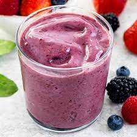

Mixed Berry Smoothies

Description
These thick and creamy berry-yoghurt smoothies are perfect on a hot day. Makes about 4 glasses.
They're also great frozen: pour into popsicle molds and pop in the freezer for a delicious treat!
Ingredients
- 1 ripe banana
- 2 TB honey
- 2 cups frozen mixed berries
- 1 cup plain yoghurt
- 1/2 cup orange juice
Steps
- Peel the banana and break it into pieces.
- Place banana and the honey in a blender and process until smooth, about 10 seconds.
- Add remaining ingredients to blender and process for 30 seconds.
- Scrape down the sides of the blender jar with a rubber spatula and process for another 30 seconds.
- Repeat until smooth.
- Pour into glasses and serve immediately.
Return to main page